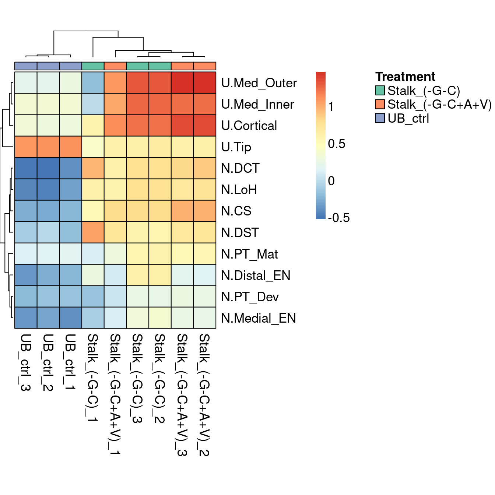

Figures
Sean Wilson
2020-12-26
Last updated: 2020-12-28
Checks: 7 0
Knit directory: HowdenWilson2020/
This reproducible R Markdown analysis was created with workflowr (version 1.6.2). The Checks tab describes the reproducibility checks that were applied when the results were created. The Past versions tab lists the development history.
Great! Since the R Markdown file has been committed to the Git repository, you know the exact version of the code that produced these results.
Great job! The global environment was empty. Objects defined in the global environment can affect the analysis in your R Markdown file in unknown ways. For reproduciblity it’s best to always run the code in an empty environment.
The command set.seed(20201109) was run prior to running the code in the R Markdown file. Setting a seed ensures that any results that rely on randomness, e.g. subsampling or permutations, are reproducible.
Great job! Recording the operating system, R version, and package versions is critical for reproducibility.
Nice! There were no cached chunks for this analysis, so you can be confident that you successfully produced the results during this run.
Great job! Using relative paths to the files within your workflowr project makes it easier to run your code on other machines.
Great! You are using Git for version control. Tracking code development and connecting the code version to the results is critical for reproducibility.
The results in this page were generated with repository version 11477de. See the Past versions tab to see a history of the changes made to the R Markdown and HTML files.
Note that you need to be careful to ensure that all relevant files for the analysis have been committed to Git prior to generating the results (you can use wflow_publish or wflow_git_commit). workflowr only checks the R Markdown file, but you know if there are other scripts or data files that it depends on. Below is the status of the Git repository when the results were generated:
Ignored files:
Ignored: .Rhistory
Ignored: .Rproj.user/
Untracked files:
Untracked: README.html
Untracked: code/AddModuleScore_bulk.R
Untracked: code/GeneSets.Rmd
Untracked: code/functions.R
Untracked: code/hfk.R
Untracked: code/job_identity_markers.R
Unstaged changes:
Modified: .gitignore
Modified: README.md
Note that any generated files, e.g. HTML, png, CSS, etc., are not included in this status report because it is ok for generated content to have uncommitted changes.
These are the previous versions of the repository in which changes were made to the R Markdown (analysis/Figures.Rmd) and HTML (docs/Figures.html) files. If you’ve configured a remote Git repository (see ?wflow_git_remote), click on the hyperlinks in the table below to view the files as they were in that past version.
| File | Version | Author | Date | Message |
|---|---|---|---|---|
| Rmd | 11477de | Sean Wilson | 2020-12-28 | Updating additional information around analysis |
| html | 1297fee | Sean Wilson | 2020-12-28 | Build site. |
| Rmd | d1d8b3f | Sean Wilson | 2020-12-28 | Initialise website |
Introduction
This document shows the figures within the manuscript generated with R code.
library(Seurat)
library(tidyverse)Registered S3 method overwritten by 'cli':
method from
print.boxx spatstat── Attaching packages ─────────────────────────────────────── tidyverse 1.3.0 ──✓ ggplot2 3.3.0 ✓ purrr 0.3.4
✓ tibble 3.0.4 ✓ dplyr 1.0.2
✓ tidyr 1.0.2 ✓ stringr 1.4.0
✓ readr 1.4.0 ✓ forcats 0.5.0── Conflicts ────────────────────────────────────────── tidyverse_conflicts() ──
x dplyr::filter() masks stats::filter()
x dplyr::lag() masks stats::lag()library(NMF)Loading required package: pkgmakerLoading required package: registryLoading required package: rngtoolsLoading required package: clusterNMF - BioConductor layer [OK] | Shared memory capabilities [NO: synchronicity] | Cores 31/32 To enable shared memory capabilities, try: install.extras('
NMF
')library(RColorBrewer)
library(patchwork)
source(here::here("code/functions.R"))
source(here::here("code/AddModuleScore_bulk.R"))
options(future.globals.maxSize = Inf)
# load the human fetal kidney data
load(file = here::here("data/Holloway2020.rda"))
# load the ue/dn subsetted data
load(file = here::here("data/UE_DN_Subset.rda"))Figure 1
Figure 1A:
HFK single cell UMAP projection
DimPlot(hfk, group.by = "Identity", label = F, pt.size = 0.5,
cols = rev(c(brewer.pal(9, "Set1"), brewer.pal(8, "Set2"), brewer.pal(12, "Set3")))) +
theme(
axis.title = element_blank())
| Version | Author | Date |
|---|---|---|
| 1297fee | Sean Wilson | 2020-12-28 |
Figure 1B:
Distal Nephron and Ureteric Epithelial cell types subset - UMAP projection
DimPlot(ue.dn, group.by = "IdentityRandom", label = T, repel = T, label.size = 4) +
theme(legend.position = "none",
axis.title = element_blank()) Warning: Using `as.character()` on a quosure is deprecated as of rlang 0.3.0.
Please use `as_label()` or `as_name()` instead.
This warning is displayed once per session.
| Version | Author | Date |
|---|---|---|
| 1297fee | Sean Wilson | 2020-12-28 |
Figure 1C:
DotPlot of commonly used DN/UE markers
ue.dn$Identity <- factor(ue.dn$Identity,
levels = rev(c("N.Distal_EN", "N.LoH", "N.DST", "N.DCT", "N.CS",
"U.Tip", "U.Cortical", "U.Med_Outer", "U.Med_Inner")))
ue.dn <- SetIdent(ue.dn, value = "Identity")
SWDP.col(ue.dn, features = rev(c("HOXB7", "GATA3", "CALB1", "KRT8", "KRT18", "KRT19", "AQP2",
"CLU", "MAL", "SPP1", "SPINT2", "CDH16")), group.by = "Identity", assay = "RNA", col.max = 10) + theme(legend.position = "none")Warning: Removed 8 rows containing missing values (geom_point).
| Version | Author | Date |
|---|---|---|
| 1297fee | Sean Wilson | 2020-12-28 |
Figure 1D:
DotPlot of more accurate DN/UE markers from Combes et al. 2019
SWDP.col(ue.dn, features = rev(c("BSND", "FXYD2", "KCNJ1", "KNG2", "CLCNKB", "CLEC18A",
"KCNN4", "AKR1B7", "ALDH3B2", "WNT9B", "CTNND2", "UPK1B", "AQP2", "RET")
), group.by = "Identity", assay = "RNA", col.max = 10) +
theme(legend.position = "none") Warning in FetchData(object = object, vars = features, cells = cells): The
following requested variables were not found: AKR1B7, KNG2Warning: Removed 58 rows containing missing values (geom_point).
| Version | Author | Date |
|---|---|---|
| 1297fee | Sean Wilson | 2020-12-28 |
Figure 1E:
DotPlot of the top 10 DE markers for each identity
ue.dn.markers <- FindAllMarkers(ue.dn, only.pos = T, verbose = T, test.use = "t",
logfc.threshold = 0.25, min.pct = 0.5, min.diff.pct = 0.3)Calculating cluster U.Med_InnerCalculating cluster U.Med_OuterCalculating cluster U.CorticalCalculating cluster U.TipCalculating cluster N.CSCalculating cluster N.DCTCalculating cluster N.DSTCalculating cluster N.LoHCalculating cluster N.Distal_EN#ue.dn.markers$cluster <- as.character(ue.dn.markers$cluster)
export.markers <- lapply(1:length(unique(ue.dn.markers$cluster)), function(x) {
ue.dn.markers %>%
dplyr::filter(cluster == unique(ue.dn.markers$cluster)[x], p_val_adj < 0.05, avg_logFC > 0) %>%
dplyr::arrange(-avg_logFC) %>%
transmute(Gene = gene, LogFC = avg_logFC, pVal = p_val_adj, pct.diff = pct.1-pct.2)
})
top10 <- ue.dn.markers %>% mutate(pct.diff = pct.1-pct.2) %>%
group_by(cluster) %>% top_n(10, wt = pct.diff) %>% arrange(cluster, -pct.diff)
top5 <- ue.dn.markers %>% mutate(pct.diff = pct.1-pct.2) %>%
group_by(cluster) %>% top_n(5, wt = pct.diff) %>% arrange(cluster, -pct.diff)(SWDP.col(ue.dn, features = rev(unique(top10$gene[1:40])), group.by = "Identity", assay = "RNA", col.max = 10) +
theme(legend.position = "none")) /
(SWDP.col(ue.dn, features = rev(unique(top10$gene[41:90])), group.by = "Identity", assay = "RNA", col.max = 10))Warning: Removed 159 rows containing missing values (geom_point).Warning: Removed 108 rows containing missing values (geom_point).
| Version | Author | Date |
|---|---|---|
| 1297fee | Sean Wilson | 2020-12-28 |
Figure 2
Figure 2F:
Heatmap showing the “Gene Set scores” of bulk RNA-seq. Samples are cell populations sorted from organoids (org) compared to a UB cultured population (UB).
aheatmap(t(scores.all[rownames(scores.all)[19:30], ]),
annCol = list(Sample = targets.new$Group[19:30]), annColors = list(c("red", "orange", "purple", "green")), #annColors = list(pal.e),
#color=vcol,
#main=paste0("Gene set scores for
#FACs organoid populations
#and UB cultures"),
Colv = NA,
Rowv = NA,
border = TRUE,
scale = "column", fontsize = 13)
| Version | Author | Date |
|---|---|---|
| 1297fee | Sean Wilson | 2020-12-28 |
Figure 2G:
Heatmap showing expression of top differentially expressed genes between the UE and DN populations.
aheatmap(t(v$E[v$genes$SYMBOL %in% genes$gene, 1:6]),
annRow = list(Sample=c("ch+/Ep+ org", "ch+/Ep+ org", "ch+/Ep+ org",
"ch+/Ep+ UE", "ch+/Ep+ UE", "ch+/Ep+ UE")),
annCol = list(Segment = geneorder$UEorDN),
annColors = list(c("violet", "grey"), c("purple", "orange")), fontsize = 13,
border = TRUE,
legend = TRUE,
labRow = colnames(v$E[1:6]),
treeheight = c(10,25))
| Version | Author | Date |
|---|---|---|
| 1297fee | Sean Wilson | 2020-12-28 |
#main="Expression of Genes from DN and UE", scale = "none")Figure 4
hfk.gata3 <- hfk[, hfk$Identity %in% c("U.Tip", "U.Cortical", "U.Med_Inner", "U.Med_Outer",
"N.DCT", "N.CS", "N.DistTubule_Dev", "S.Mesangial")]
##hfk.gata3 <- SCTransform(hfk.gata3, do.scale = T, verbose = F)
#ue.int <- SCTransform(ue.int, do.scale = T, verbose = F)
#anchors.gata3 <- FindTransferAnchors(hfk.gata3, query = ue.int, dims = 1:30, reference.assay = "SCT", query.assay = "SCT", #project.query = T)
#predictions <- TransferData(anchorset = anchors.gata3, refdata = hfk.gata3$Identity, dims = 1:30)
#ue.int$gata3.seg.prediction <- predictions$predicted.id
#ue.int$gata3.seg.max.score <- predictions$prediction.score.max
calls <- as.data.frame(table(ue.int$gata3.seg.prediction, ue.int$gata3.seg.max.score>0.5,
ue.int$sample))
colnames(calls) <- c("Predicted Segment", "Similarity", "Cells")
ue.int.df$pct <- ue.int.df$Freq / sum(ue.int.df$Freq) * 100
colnames(ue.int.df) <- c("Predicted Segment", "Cells", "Percent")
calls$Similarity <- gsub(pattern = "FALSE", x = calls$Similarity, replacement = "Less than 50%")
calls$Similarity <- gsub(pattern = "TRUE", x = calls$Similarity, replacement = "More than 50%")Figure 4A:
UMAP representation of the two single cell UE samples
DimPlot(ue.int, group.by = "sample", ncol = 1) +
#ggtitle("A. UE and DN segments transferred") +
theme(legend.title=element_text(size=rel(0.5))) +
theme(legend.text = element_text(size = rel(0.75)),
axis.title = element_blank(),
axis.text = element_blank())
| Version | Author | Date |
|---|---|---|
| 1297fee | Sean Wilson | 2020-12-28 |
Figure 4B:
UMAP representatives of the two single cell UE samples, grouped by the outcome from “Label Transfer” with the human fetal kidney reference.
DimPlot(ue.int, group.by = "gata3.seg.prediction") +
#ggtitle("A. UE and DN segments transferred") +
theme(legend.title=element_text(size=rel(0.5))) +
theme(legend.text = element_text(size = rel(0.75)),
axis.title = element_blank(),
axis.text = element_blank())
| Version | Author | Date |
|---|---|---|
| 1297fee | Sean Wilson | 2020-12-28 |
Figure 4C:
Distribution of maximum similarity scores grouped by label transfer classification.
predictions$predicted.id <- gsub("N.DistTubule_Dev", "N.DST", predictions$predicted.id)
predictions %>%
mutate(`Predicted Segment` = predicted.id, `Max score` = prediction.score.max,
`Predicted Segment` = fct_relevel(`Predicted Segment`,
"U.Tip", "U.Cortical", "U.Med_Outer", "U.Med_Inner", "N.CS", "N.DST", "S.Mesangial")) %>%
ggplot(aes(`Predicted Segment`, `Max score`)) +
geom_jitter(aes(colour = predicted.id), size = 0.05, alpha = 0.8)+
geom_violin(alpha = 0.5) +
theme_light()+
scale_y_continuous(limits = c(0,1)) +
theme(axis.text.x = element_text(angle = -90, hjust = 0, vjust = 0, size = 20)) +
theme(legend.position = "none")Warning: Removed 46 rows containing non-finite values (stat_ydensity).Warning: Removed 46 rows containing missing values (geom_point).
| Version | Author | Date |
|---|---|---|
| 1297fee | Sean Wilson | 2020-12-28 |
Figure 4D:
UMAP plots showing the expression of important UE and DN genes in the single cell UE culture samples.
#ggtitle("Max similarity per cell")
genes <- c("RET", "WNT11",
"WNT9B", "WNT7B",
"AQP2", "UPK2")
lp <- list()
for (gene in genes) {
p <- FeaturePlot(ue.int, order = T,
features = c(paste0(gene)), pt.size = 0.3,
cols = c(vcol)) +
theme(axis.title = element_blank(),
plot.title = element_text(size = 12),
legend.text = element_blank(),
axis.text = element_blank(),
legend.position = "none")
lp[[paste0(gene)]] <- p
}
lp %>% patchwork::wrap_plots(design = "
ACF
BDE")
| Version | Author | Date |
|---|---|---|
| 1297fee | Sean Wilson | 2020-12-28 |
Figure 7
Figure 7A:
Heatmap showing expression of interesting genes for UE and Stalk in bulk RNA-seq samples of cultured UE and Stalk.
targets.new <- read_csv(here::here("data/AllTargets.csv"))
── Column specification ────────────────────────────────────────────────────────
cols(
Sample = col_character(),
`Sequencing Name` = col_character(),
`Replicate wells` = col_double(),
Experiment = col_character(),
Age = col_character(),
Treatment = col_character(),
`Date sample harvested` = col_character(),
`Date RNA extracted` = col_character(),
`RNA conc (ng/uL)` = col_double(),
`Volume (uL)` = col_double(),
`Total RNA (ng)` = col_double(),
Group = col_character(),
Rep = col_double(),
Batch = col_character(),
ID = col_character(),
Exp.Origin = col_character()
)batch <- ggplotColors(length(unique(targets.new$Batch)))
treatment <- RColorBrewer::brewer.pal(3, "Set2")
#gene <- RColorBrewer::brewer.pal(length(unique(gene.markers$gene)), "Set3")
load(file = here::here("data/Voom_Stalk.rda"))
gene.markers <- tibble(gene = c("AQP2", "SPINK1", "SLC26A4", "ATP6V1B1", "WNT9B", "SLC4A5", "OXGR1", "AVPR1A", "AVPR2", "WNT7B", "SLC26A7", "SCNN1G", "CALB1", "RHBG", "WNT11"),
segment = c("PC", "IC", "IC", "IC", "Stalk", "Stalk", "IC", "IC", "PC", "Stalk", "IC", "PC", "PC", "Stalk", "Stalk"),
id = 1:15)
segment <- RColorBrewer::brewer.pal(length(unique(gene.markers$segment)), "Set1")aheatmap((v2$E[v2$genes$SYMBOL %in% gene.markers$gene,
c(16:21, 31:33)]),
annCol = list(Treatment=targets.new$Treatment[c(16:21, 31:33)]),
annColors = list(Treatment = treatment),
fontsize = 13,
border = TRUE,
treeheight = c(10,25),
main="", scale = "none")
| Version | Author | Date |
|---|---|---|
| 1297fee | Sean Wilson | 2020-12-28 |
Figure 7B:
Heatmap showing Gene Set profiles in bulk RNA-seq samples of cultured UE and Stalk.
aheatmap(t(scores.all)[16:27, c(16:21, 31:33)],
annCol = list(Treatment=targets.new$Treatment[c(16:21, 31:33)]),
annColors = list(Treatment = treatment),
fontsize = 13,
border = TRUE,
treeheight = c(10,25),
main="", scale = "none")
sessionInfo()R version 3.6.1 (2019-07-05)
Platform: x86_64-pc-linux-gnu (64-bit)
Running under: CentOS Linux 7 (Core)
Matrix products: default
BLAS: /hpc/software/installed/R/3.6.1/lib64/R/lib/libRblas.so
LAPACK: /hpc/software/installed/R/3.6.1/lib64/R/lib/libRlapack.so
locale:
[1] LC_CTYPE=en_US.UTF-8 LC_NUMERIC=C
[3] LC_TIME=en_US.UTF-8 LC_COLLATE=en_US.UTF-8
[5] LC_MONETARY=en_US.UTF-8 LC_MESSAGES=en_US.UTF-8
[7] LC_PAPER=en_US.UTF-8 LC_NAME=C
[9] LC_ADDRESS=C LC_TELEPHONE=C
[11] LC_MEASUREMENT=en_US.UTF-8 LC_IDENTIFICATION=C
attached base packages:
[1] parallel stats graphics grDevices utils datasets methods
[8] base
other attached packages:
[1] limma_3.42.2 patchwork_1.0.0 RColorBrewer_1.1-2
[4] NMF_0.22.0 bigmemory_4.5.36 Biobase_2.46.0
[7] BiocGenerics_0.32.0 cluster_2.1.0 rngtools_1.5
[10] pkgmaker_0.32.2 registry_0.5-1 forcats_0.5.0
[13] stringr_1.4.0 dplyr_1.0.2 purrr_0.3.4
[16] readr_1.4.0 tidyr_1.0.2 tibble_3.0.4
[19] ggplot2_3.3.0 tidyverse_1.3.0 Seurat_3.2.2
[22] workflowr_1.6.2
loaded via a namespace (and not attached):
[1] readxl_1.3.1 backports_1.1.10 plyr_1.8.6
[4] igraph_1.2.5 lazyeval_0.2.2 splines_3.6.1
[7] listenv_0.8.0 gridBase_0.4-7 digest_0.6.25
[10] foreach_1.5.1 htmltools_0.5.0 viridis_0.5.1
[13] fansi_0.4.1 magrittr_1.5 tensor_1.5
[16] doParallel_1.0.16 ROCR_1.0-11 globals_0.13.0
[19] modelr_0.1.6 matrixStats_0.57.0 colorspace_1.4-1
[22] blob_1.2.1 rvest_0.3.5 rappdirs_0.3.1
[25] ggrepel_0.8.2 haven_2.2.0 xfun_0.12
[28] bigmemory.sri_0.1.3 crayon_1.3.4 jsonlite_1.7.1
[31] spatstat_1.63-3 spatstat.data_1.4-3 survival_3.2-7
[34] zoo_1.8-8 iterators_1.0.13 glue_1.4.2
[37] polyclip_1.10-0 gtable_0.3.0 leiden_0.3.3
[40] future.apply_1.6.0 abind_1.4-5 scales_1.1.1
[43] DBI_1.1.0 miniUI_0.1.1.1 Rcpp_1.0.5
[46] viridisLite_0.3.0 xtable_1.8-4 reticulate_1.16
[49] rsvd_1.0.3 htmlwidgets_1.5.1 httr_1.4.1
[52] ellipsis_0.3.1 ica_1.0-2 farver_2.0.3
[55] pkgconfig_2.0.3 uwot_0.1.8 dbplyr_1.4.4
[58] deldir_0.1-29 here_0.1 labeling_0.4.2
[61] tidyselect_1.1.0 rlang_0.4.7 reshape2_1.4.4
[64] later_1.0.0 munsell_0.5.0 cellranger_1.1.0
[67] tools_3.6.1 cli_2.1.0 generics_0.1.0
[70] broom_0.7.2 ggridges_0.5.2 evaluate_0.14
[73] fastmap_1.0.1 yaml_2.2.1 goftest_1.2-2
[76] knitr_1.28 fs_1.5.0 fitdistrplus_1.1-1
[79] RANN_2.6.1 pbapply_1.4-3 future_1.16.0
[82] nlme_3.1-150 whisker_0.4 mime_0.9
[85] xml2_1.2.5 compiler_3.6.1 rstudioapi_0.11
[88] plotly_4.9.2.1 png_0.1-7 spatstat.utils_1.17-0
[91] reprex_0.3.0 stringi_1.5.3 lattice_0.20-41
[94] Matrix_1.2-18 vctrs_0.3.4 pillar_1.4.3
[97] lifecycle_0.2.0 lmtest_0.9-38 RcppAnnoy_0.0.16
[100] data.table_1.13.0 cowplot_1.1.0 irlba_2.3.3
[103] httpuv_1.5.2 R6_2.5.0 promises_1.1.0
[106] KernSmooth_2.23-17 gridExtra_2.3 codetools_0.2-16
[109] MASS_7.3-53 assertthat_0.2.1 rprojroot_1.3-2
[112] withr_2.2.0 sctransform_0.3.1 mgcv_1.8-33
[115] hms_0.5.3 grid_3.6.1 rpart_4.1-15
[118] rmarkdown_2.1 Rtsne_0.15 git2r_0.27.1
[121] shiny_1.4.0.2 lubridate_1.7.9
sessionInfo()R version 3.6.1 (2019-07-05)
Platform: x86_64-pc-linux-gnu (64-bit)
Running under: CentOS Linux 7 (Core)
Matrix products: default
BLAS: /hpc/software/installed/R/3.6.1/lib64/R/lib/libRblas.so
LAPACK: /hpc/software/installed/R/3.6.1/lib64/R/lib/libRlapack.so
locale:
[1] LC_CTYPE=en_US.UTF-8 LC_NUMERIC=C
[3] LC_TIME=en_US.UTF-8 LC_COLLATE=en_US.UTF-8
[5] LC_MONETARY=en_US.UTF-8 LC_MESSAGES=en_US.UTF-8
[7] LC_PAPER=en_US.UTF-8 LC_NAME=C
[9] LC_ADDRESS=C LC_TELEPHONE=C
[11] LC_MEASUREMENT=en_US.UTF-8 LC_IDENTIFICATION=C
attached base packages:
[1] parallel stats graphics grDevices utils datasets methods
[8] base
other attached packages:
[1] limma_3.42.2 patchwork_1.0.0 RColorBrewer_1.1-2
[4] NMF_0.22.0 bigmemory_4.5.36 Biobase_2.46.0
[7] BiocGenerics_0.32.0 cluster_2.1.0 rngtools_1.5
[10] pkgmaker_0.32.2 registry_0.5-1 forcats_0.5.0
[13] stringr_1.4.0 dplyr_1.0.2 purrr_0.3.4
[16] readr_1.4.0 tidyr_1.0.2 tibble_3.0.4
[19] ggplot2_3.3.0 tidyverse_1.3.0 Seurat_3.2.2
[22] workflowr_1.6.2
loaded via a namespace (and not attached):
[1] readxl_1.3.1 backports_1.1.10 plyr_1.8.6
[4] igraph_1.2.5 lazyeval_0.2.2 splines_3.6.1
[7] listenv_0.8.0 gridBase_0.4-7 digest_0.6.25
[10] foreach_1.5.1 htmltools_0.5.0 viridis_0.5.1
[13] fansi_0.4.1 magrittr_1.5 tensor_1.5
[16] doParallel_1.0.16 ROCR_1.0-11 globals_0.13.0
[19] modelr_0.1.6 matrixStats_0.57.0 colorspace_1.4-1
[22] blob_1.2.1 rvest_0.3.5 rappdirs_0.3.1
[25] ggrepel_0.8.2 haven_2.2.0 xfun_0.12
[28] bigmemory.sri_0.1.3 crayon_1.3.4 jsonlite_1.7.1
[31] spatstat_1.63-3 spatstat.data_1.4-3 survival_3.2-7
[34] zoo_1.8-8 iterators_1.0.13 glue_1.4.2
[37] polyclip_1.10-0 gtable_0.3.0 leiden_0.3.3
[40] future.apply_1.6.0 abind_1.4-5 scales_1.1.1
[43] DBI_1.1.0 miniUI_0.1.1.1 Rcpp_1.0.5
[46] viridisLite_0.3.0 xtable_1.8-4 reticulate_1.16
[49] rsvd_1.0.3 htmlwidgets_1.5.1 httr_1.4.1
[52] ellipsis_0.3.1 ica_1.0-2 farver_2.0.3
[55] pkgconfig_2.0.3 uwot_0.1.8 dbplyr_1.4.4
[58] deldir_0.1-29 here_0.1 labeling_0.4.2
[61] tidyselect_1.1.0 rlang_0.4.7 reshape2_1.4.4
[64] later_1.0.0 munsell_0.5.0 cellranger_1.1.0
[67] tools_3.6.1 cli_2.1.0 generics_0.1.0
[70] broom_0.7.2 ggridges_0.5.2 evaluate_0.14
[73] fastmap_1.0.1 yaml_2.2.1 goftest_1.2-2
[76] knitr_1.28 fs_1.5.0 fitdistrplus_1.1-1
[79] RANN_2.6.1 pbapply_1.4-3 future_1.16.0
[82] nlme_3.1-150 whisker_0.4 mime_0.9
[85] xml2_1.2.5 compiler_3.6.1 rstudioapi_0.11
[88] plotly_4.9.2.1 png_0.1-7 spatstat.utils_1.17-0
[91] reprex_0.3.0 stringi_1.5.3 lattice_0.20-41
[94] Matrix_1.2-18 vctrs_0.3.4 pillar_1.4.3
[97] lifecycle_0.2.0 lmtest_0.9-38 RcppAnnoy_0.0.16
[100] data.table_1.13.0 cowplot_1.1.0 irlba_2.3.3
[103] httpuv_1.5.2 R6_2.5.0 promises_1.1.0
[106] KernSmooth_2.23-17 gridExtra_2.3 codetools_0.2-16
[109] MASS_7.3-53 assertthat_0.2.1 rprojroot_1.3-2
[112] withr_2.2.0 sctransform_0.3.1 mgcv_1.8-33
[115] hms_0.5.3 grid_3.6.1 rpart_4.1-15
[118] rmarkdown_2.1 Rtsne_0.15 git2r_0.27.1
[121] shiny_1.4.0.2 lubridate_1.7.9